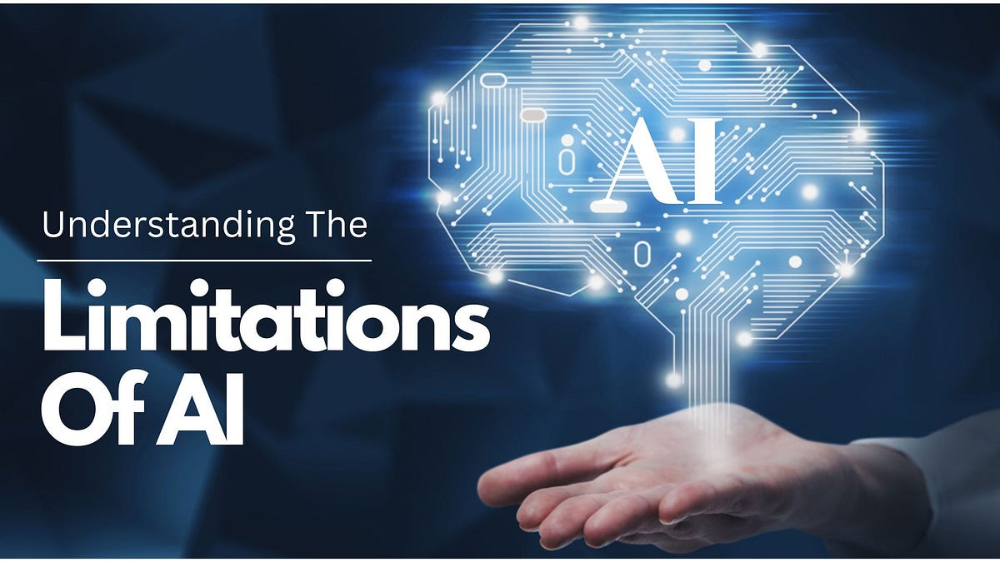
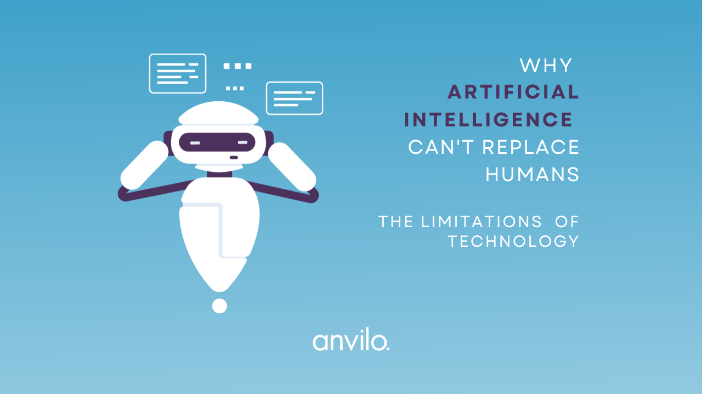

Human Limitations and Artificial Intelligence
 Artificial intelligence (AI) has made great progress, transforming areas such as healthcare, banking, and transportation by performing activities previously regarded to be distinctively human. However, when considering "how intelligent is artificial intelligence?" it is critical to distinguish between the specialized intelligence of AI systems and the broader, more flexible intellect of humans. AI's abilities, though amazing, are essentially constrained by its reliance on data, lack of contextual knowledge, and lack of genuine thinking ability, all of which contrast dramatically with human cognitive talents.
AI systems excel in processing large amounts of data, identifying patterns, and carrying out tasks with accuracy and speed. For example, AI algorithms can surpass humans at image identification, language translation, and even complicated games like chess and Go. However, these successes are limited to certain jobs with well-defined criteria. Russell and Norvig (2021) state in their seminal work on AI that "current AI systems are narrow in scope, lacking the general intelligence that would allow them to perform well across a wide range of tasks without significant retraining" (Russell & Norvig, 2021). This demonstrates one of AI's main limitations: its intelligence is very specialized and depends on certain data inputs.
Human intelligence, on the other hand, is defined by the ability to reason, perceive context, and apply information across a wide range of contexts, frequently without explicit instruction or training. Humans can negotiate uncertain or unexpected circumstances with intuition, common sense, and emotional understanding, which AI currently lacks. For example, a human may interpret sarcasm, empathize with others, and make ethical decisions, but AI lacks the deep understanding required to grasp such intricacies. This difference is largely due to the fact that, despite its processing capability, AI relies solely on statistical correlations within the data it has been trained on, with no genuine comprehension of the world with which it interacts.
Furthermore, AI's decision-making processes are frequently opaque, raising concerns about the "black box" character of many sophisticated algorithms. This lack of openness can be problematic, particularly in high-stakes industries such as healthcare and criminal justice, where knowing the reasoning behind choices is crucial. According to Brynjolfsson and McAfee (2017), "while AI can make predictions and automate tasks, it lacks the human qualities of explanation and justification that are frequently required in decision-making processes."
In conclusion, while AI represents a significant development in specialized intelligence, it is inherently limited when compared to human intellect. AI excels at data processing and specific tasks, but it lacks human-like general intelligence, adaptability, and contextual understanding. As AI advances, identifying and addressing these limits will be critical to ensuring that it is used as a tool to supplement rather than replace human abilities.